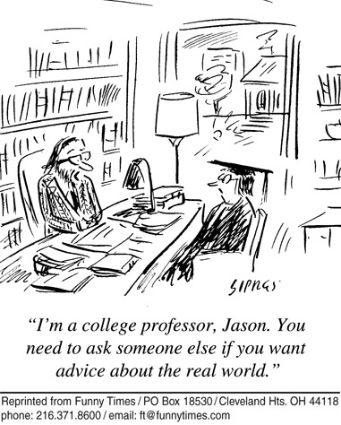

Yet nothing warms the prof's heart as much as a student who is interested in the course material and wants to discuss it. In order to get more from your education, and because getting to know these profs may lead to other good things, such as a more personalized letter of recommendation, this assignment is to have a substantive talk with one of your current or previous anthropology professors.

Go to one of your anthropology professors and have a SUBSTANTIVE conversation about the course material. For example: ask a question about an argument or claim that was unclear or that you disagree with, tell the prof about an idea that occurred to you as you read the material, discuss how a concept applies to other evidence you know about, etc.
Common topics of discussion that would NOT count as substantive for the purposes of this extra-credit assignment are (a) procedural questions, such as questions about the course requirements, exams, the form an assignment should take, etc, (b) questions about how you are doing in the course, and (c) getting-to-know-you questions, such as "how did you get interested in anthropology?" These are useful things to talk about, but the purpose of this assignment is to have an intellectual exchange about ideas and the evidence for ideas. Those kinds of discussions require more initiative from you, but they will enhance your education and will impress your professor.
Write a short paragraph summarizing the discussion and submit to turnitin.com. Please include only enough detail so that it is obvious you had the discussion and that it was "substantive" as defined above. Due date is on the homepage and syllabus, but earlier will be more useful for you.